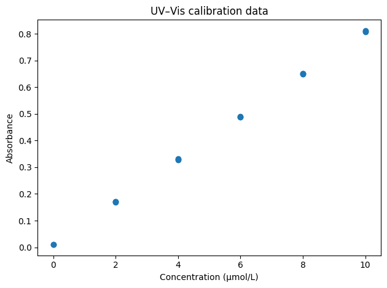
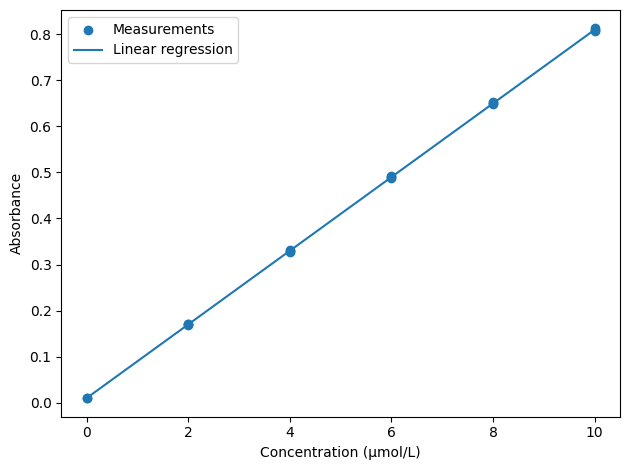

Calibration and statistical inference#
Learning outcomes
After working through this topic, you should be able to:
use linear regression to construct a calibration model
interpret slope, intercept and \(R^2\) in a chemical context
use a calibration model to estimate an unknown concentration
explain the meaning of a null hypothesis and a p-value
choose between a one-sample, independent-samples and paired t-test in simple chemical situations
assess a suspicious measurement using a documented scientific and statistical procedure
In the previous chapter we used statistics to describe measurements and uncertainty in a mean. We now use those ideas for two common tasks in chemistry:
constructing a calibration model and using it to determine an unknown concentration;
comparing a measurement with a reference value or comparing results from groups or analytical methods.
The goal is not to collect as many statistical tests as possible. The goal is to choose a method that answers the chemical question.
Part 1: From calibration standards to an unknown concentration#
The chemical model#
In UV–Vis spectroscopy, the Beer–Lambert law relates absorbance to concentration:
where \(A\) is absorbance, \(\varepsilon\) is the molar absorptivity, \(l\) is the optical path length and \(c\) is concentration. When path length and chemical conditions are constant, absorbance is expected to increase approximately linearly with concentration over an appropriate range.
Real measurements do not fall on a perfectly straight line, so we fit
where \(a\) is the slope and \(b\) the intercept.
Calibration model
A calibration model describes the relationship between a measured signal and known values of the quantity we want to determine. The model is then used to estimate the quantity in an unknown sample within the validated range of the calibration.
The straight line is a model, not a guarantee that linearity continues indefinitely.
Look at the data first#
We begin with blanks and calibration standards. Keeping all replicates visible lets us inspect both the trend and the measurement spread.
import pandas as pd
import matplotlib.pyplot as plt
data = pd.read_csv("data/uvvis_calibration.csv")
standards = data[data["sample_type"].isin(["blank", "standard"])]
plt.scatter(standards["concentration_uM"], standards["absorbance"])
plt.xlabel("Concentration (µmol/L)")
plt.ylabel("Absorbance")
plt.title("UV–Vis calibration data")
plt.tight_layout()
plt.show()

The points appear to follow an approximately straight line, which gives us both a chemical and visual reason to try a linear model.
Linear regression#
Linear regression
Linear regression estimates the straight line that best describes a relationship between a response variable \(y\) and an explanatory variable \(x\) under a set of statistical assumptions.
We use scipy.stats.linregress:
from scipy.stats import linregress
result = linregress(standards["concentration_uM"], standards["absorbance"])
slope = result.slope
intercept = result.intercept
r_squared = result.rvalue**2
print(f"Slope: {slope:.5f} L/µmol")
print(f"Intercept: {intercept:.5f}")
print(f"R²: {r_squared:.6f}")
Slope: 0.07989 L/µmol
Intercept: 0.01037
R²: 0.999964
The output contains several quantities, but none should be reported without interpretation.
Slope#
The slope tells us how much the fitted absorbance changes when concentration increases by 1 µmol/L. A steeper slope means the analytical signal changes more for a given concentration change: in this context, the calibration has greater sensitivity.
Sensitivity is not the same as precision. Two methods can have similar slopes but different replicate scatter.
Intercept#
The intercept is the fitted absorbance at zero concentration. It can reflect blank signal, instrumental offset and random sampling variation.
Although the ideal Beer–Lambert equation is often written without an intercept, we should not automatically force a fitted calibration through the origin. Doing so imposes an additional assumption that must be justified experimentally.
\(R^2\)#
Coefficient of determination, \(R^2\)
For this simple linear regression, \(R^2\) summarises how much of the variation in the response is associated with the fitted linear relationship. Values close to 1 indicate that the points lie close to a straight line.
A high \(R^2\) is not a complete quality criterion. We must also inspect the raw points, replicate variation, calibration range and chemical plausibility. A dataset can have a high \(R^2\) while still containing a problematic standard or beginning to deviate systematically from Beer–Lambert behaviour at one end of the range.
Show the data and model together#
We calculate fitted values across the calibration range and draw the regression line together with the raw measurements.
import numpy as np
import matplotlib.pyplot as plt
x_model = np.linspace(0, 10, 100)
y_model = slope * x_model + intercept
plt.scatter(standards["concentration_uM"], standards["absorbance"], label="Measurements")
plt.plot(x_model, y_model, label="Linear regression")
plt.xlabel("Concentration (µmol/L)")
plt.ylabel("Absorbance")
plt.legend()
plt.tight_layout()
plt.show()

We retain the individual measurements in the figure. Replacing each concentration by one mean point would conceal replicate-to-replicate variation.
You can explore the calibration in the browser editor below.
Determine the unknown concentration#
For an unknown sample we measure absorbance and rearrange the calibration equation:
unknown = data[data["sample_type"] == "unknown"]
unknown_absorbance_mean = unknown["absorbance"].mean()
unknown_concentration = (unknown_absorbance_mean - intercept) / slope
print(f"Mean unknown absorbance: {unknown_absorbance_mean:.4f}")
print(f"Estimated concentration: {unknown_concentration:.3f} µmol/L")
Mean unknown absorbance: 0.6043
Estimated concentration: 7.435 µmol/L
The estimate lies inside the calibration range, which is important. Extrapolating outside the range of standards assumes that the same relationship continues where it has not been tested.
This simple calculation gives a point estimate. A complete analytical uncertainty assessment would also account for uncertainty in the fitted calibration, replicate measurements, standards and relevant sample-preparation steps. The inverse-prediction problem is therefore more subtle than simply inserting an absorbance into a line equation.
Check your understanding
Suppose an unknown gives an absorbance of 1.20 while the highest standard has absorbance about 0.81. Why is applying the same equation directly questionable? What experimental change would be preferable?
Suggested answer
The result would be an extrapolation outside the measured calibration range, where linearity has not been established. A better approach is normally to dilute the unknown into the validated range or extend and validate the calibration range with appropriate standards.
Part 2: Comparing a result with a reference value#
Suppose a certified reference material has a concentration of 5.00 mg/L and we obtain:
5.12, 5.08, 5.15, 5.10, 5.13 mg/L
The mean is 5.116 mg/L. Is the difference from 5.00 mg/L compatible with random measurement variation, or does it suggest systematic bias?
Start with the confidence interval#
The previous chapter gave a 95% confidence interval of approximately 5.082–5.150 mg/L for this dataset. The reference value 5.00 mg/L lies outside that interval. Under the same assumptions, that already tells us that the reference value is difficult to reconcile with the observed measurements.
Confidence intervals are often more informative than a binary test result because they show the magnitude and precision of the estimate.
Null hypothesis and p-value#
A hypothesis test begins by specifying a null hypothesis.
Null hypothesis
The null hypothesis, \(H_0\), is a precise reference claim used to calculate how unusual the observed data would be under that claim.
Here:
We then calculate a test statistic and a p-value.
p-value
A p-value is the probability, assuming the null hypothesis and the model assumptions are true, of obtaining a test statistic at least as incompatible with \(H_0\) as the one observed.
A p-value is not the probability that the null hypothesis is true, nor is \(1-p\) the probability that our preferred explanation is correct.
One-sample t-test#
A one-sample t-test compares the mean of one sample with a specified reference mean.
import numpy as np
from scipy import stats
measurements_mg_L = np.array([5.12, 5.08, 5.15, 5.10, 5.13])
reference_mg_L = 5.00
t_statistic, p_value = stats.ttest_1samp(measurements_mg_L, popmean=reference_mg_L)
print(f"t = {t_statistic:.3f}")
print(f"p = {p_value:.5f}")
t = 9.600
p = 0.00066
If we had selected a significance level of \(\alpha=0.05\) before looking at the result, a p-value below 0.05 would be called statistically significant. But that threshold does not tell us whether the difference is chemically or practically important.
A difference of 0.12 mg/L may be irrelevant in one application and unacceptable in another. Always report and interpret the effect size — here the mean difference — alongside the p-value and preferably a confidence interval.
The one-sample t-test relies on the same main assumptions as the t-based confidence interval: independent observations and an approximately normal measurement distribution, especially important for small samples.
Part 3: Comparing two independent groups#
An independent-samples t-test is appropriate when observations in the two groups come from separate independent samples and there is no natural pairing.
Suppose two independent batches are analysed:
batch_A = np.array([5.01, 5.08, 5.04, 4.99, 5.06, 5.03])
batch_B = np.array([5.18, 5.11, 5.16, 5.20, 5.14, 5.17])
t_statistic, p_value = stats.ttest_ind(batch_A, batch_B, equal_var=False)
print(f"Mean A: {batch_A.mean():.3f} mg/L")
print(f"Mean B: {batch_B.mean():.3f} mg/L")
print(f"Difference: {batch_B.mean() - batch_A.mean():.3f} mg/L")
print(f"p = {p_value:.5f}")
Mean A: 5.035 mg/L
Mean B: 5.160 mg/L
Difference: 0.125 mg/L
p = 0.00005
Here we use Welch’s version (equal_var=False), which does not require the two populations to have equal variances and is a sensible default for many independent-group comparisons.
The interpretation still depends on the experiment. Were the batches genuinely sampled independently? Were they prepared under comparable conditions? Could a confounding factor explain the difference? The test cannot answer those design questions.
Part 4: Comparing two analytical methods#
Now suppose methods A and B are applied to the same eight samples. Each row therefore contains a pair of measurements.
methods = pd.read_csv("data/method_comparison.csv")
methods["difference_mg_L"] = methods["method_B_mg_L"] - methods["method_A_mg_L"]
print(methods)
print(f"Mean difference: {methods['difference_mg_L'].mean():.3f} mg/L")
sample_id method_A_mg_L method_B_mg_L difference_mg_L
0 sample_1 5.1 5.22 0.12
1 sample_2 10.2 10.28 0.08
2 sample_3 7.5 7.65 0.15
3 sample_4 12.3 12.40 0.10
4 sample_5 3.9 3.99 0.09
5 sample_6 8.8 8.93 0.13
6 sample_7 15.1 15.21 0.11
7 sample_8 6.4 6.47 0.07
Mean difference: 0.106 mg/L
The within-sample difference is what matters. A sample with a high analyte concentration will tend to give high values with both methods. Pairing removes much of this between-sample variation and focuses the comparison on the method difference.
Paired t-test#
Paired t-test
A paired t-test is a one-sample t-test applied to the pairwise differences. It tests whether the mean difference is compatible with zero.
t_statistic, p_value = stats.ttest_rel(
methods["method_B_mg_L"],
methods["method_A_mg_L"],
)
print(f"t = {t_statistic:.3f}")
print(f"p = {p_value:.5f}")
t = 11.259
p = 0.00001
You can inspect the paired comparison in the editor below.
Why not treat these as independent groups?
The observations are paired by sample. Ignoring that pairing discards useful experimental structure and changes the question. The paired test asks whether the within-sample differences have a non-zero mean.
Which test should we use?#
Chemical question |
Method |
Example |
|---|---|---|
Does one measurement series agree with a known/reference mean? |
one-sample t-test |
certified reference material |
Do two independent groups have different means? |
Welch independent-samples t-test |
independent batches or treatment groups |
Do two methods/conditions differ when applied to the same samples? |
paired t-test |
method A vs method B on identical samples |
Choose the test from the experimental design and question, not from whichever test produces the preferred p-value.
Part 5: A suspicious measurement#
A value that differs strongly from the rest may be caused by a transcription error, contamination, sample-preparation problem, instrument fault or a real chemical difference. Before calculating an outlier test, investigate:
Was the value entered correctly?
Is there an instrument warning or laboratory note?
Was sample preparation different?
Is there a scientifically plausible reason the sample could genuinely differ?
Was the criterion for exclusion defined before seeing the result?
Never remove a value simply because the standard deviation becomes smaller or a calibration line looks better without it.
Grubbs’ test#
For an approximately normal sample containing one suspected outlier, Grubbs’ statistic is
A critical value can be calculated from the t-distribution. The test has restrictive assumptions: it is intended for one suspected outlier in an approximately normal sample, and repeated testing after deleting points inflates the risk of unjustified exclusions.
import numpy as np
from scipy import stats
measurements = np.array([10.02, 10.05, 9.98, 10.01, 10.42])
alpha = 0.05
n = len(measurements)
mean = np.mean(measurements)
s = np.std(measurements, ddof=1)
deviations = np.abs(measurements - mean)
G = np.max(deviations) / s
t_critical = stats.t.ppf(1 - alpha / (2 * n), n - 2)
G_critical = ((n - 1) / np.sqrt(n)) * np.sqrt(t_critical**2 / (n - 2 + t_critical**2))
suspected_value = measurements[np.argmax(deviations)]
print(f"Suspected value: {suspected_value:.2f}")
print(f"G = {G:.3f}")
print(f"Critical G = {G_critical:.3f}")
print("Flagged by Grubbs' test:", G > G_critical)
Suspected value: 10.42
G = 1.772
Critical G = 1.715
Flagged by Grubbs' test: True
You can inspect the calculation in the editor below.
Check your understanding
If the test flags 10.42 as an outlier, are we now allowed to delete it?
Suggested answer
The statistical result is supporting evidence, not an automatic deletion command. We still need to document why the observation is inconsistent with the intended measurement process and why the assumptions of the test are reasonable. If 10.42 reflects a genuine chemical difference, deleting it would remove real information.
A practical workflow#
For a chemical statistical analysis, a useful order is:
Define the chemical question and experimental unit. What does one observation represent?
Inspect the raw data. Look for missing values, impossible values and unexpected patterns.
Visualise before modelling. Show replicate measurements where possible.
Choose a model/test from the design. Calibration, one-sample, independent or paired?
Check important assumptions. Independence, approximate distributional assumptions and relevant model form.
Report effect sizes and uncertainty. Do not reduce the result to
p < 0.05.Interpret chemically. Is the magnitude important for the intended application?
Document exclusions and processing. A reader should be able to reconstruct what happened.
Python performs calculations reliably, but the scientific choice and interpretation remain ours.
Short summary#
Linear regression can connect an analytical signal with concentration within an investigated calibration range.
linregressprovides slope, intercept and correlation information; each must be interpreted in context.\(R^2\) alone does not validate a calibration.
An unknown should normally lie within the validated calibration range.
A p-value is calculated conditional on the null hypothesis and assumptions; it is not the probability that the null hypothesis is true.
Use one-sample, independent or paired t-tests according to the experimental design.
Statistical significance and chemical importance are different questions.
A suspicious observation requires scientific investigation. Grubbs’ test can support the assessment but cannot replace it.
Exercises#
Exercise 4.1 — understand the calibration line
Use data/uvvis_calibration.csv to perform a linear regression. Report slope, intercept and \(R^2\). Explain in words what the slope and intercept mean in this UV–Vis analysis.
Exercise 4.2 — raw data versus means
Plot every calibration replicate. Then make a second plot containing one mean absorbance per concentration with SD error bars. What information is clearer in each version?
Exercise 4.3 — unknown sample
Calculate the mean absorbance of the unknown sample and estimate its concentration. Is it interpolation or extrapolation? Explain why that distinction matters.
Exercise 4.4 — reference value
Use the five iron measurements and a certified value of 5.00 mg/L. Report the mean difference, 95% confidence interval for the mean and the one-sample t-test p-value. Write a short interpretation that distinguishes statistical evidence from practical importance.
Exercise 4.5 — independent groups
Construct two independent sets of replicate measurements and compare them with Welch’s t-test. State exactly what makes the groups independent.
Exercise 4.6 — paired or independent?
For each scenario — two instruments measuring the same samples, two independent production batches, before/after measurements on the same sample — decide whether an independent or paired comparison is appropriate and justify your answer.
Exercise 4.7 — two analytical methods
Use data/method_comparison.csv. Calculate method B minus method A for each sample, find the mean difference and perform a paired t-test. Does method B tend to give higher or lower results? Is the magnitude important for the application?
Exercise 4.8 — suspicious measurement
Apply Grubbs’ test to [10.02, 10.05, 9.98, 10.01, 10.42]. Then write a decision tree containing the experimental checks you would make before excluding the flagged value.
Exercise 4.9 — complete UV–Vis case
Use data/uvvis_calibration.csv to construct a calibration plot, perform linear regression and estimate the concentration of the unknown. Write a short report containing the model, units, concentration estimate and at least two limitations of the result.